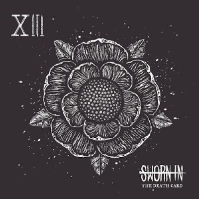
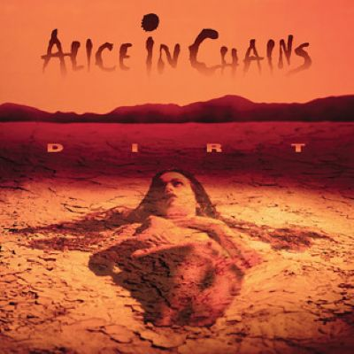
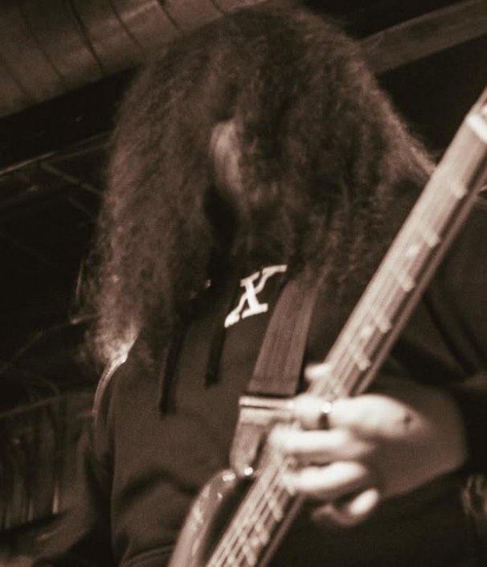
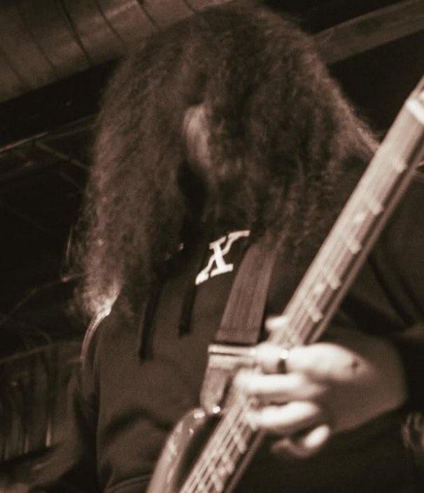

Musical Interests
As I mentioned earlier, my main hobby is music. I love listening to, playing, and producing music.
Guitar
I play electric guitar and electric bass. I've been playing guitar for about 14 years, and bass for about 4. I have a collection of three guitars and two basses:
- Schecter Demon-7
- ESP LTD M100-II
- PRS SE Tremonti
- Ibanez SR405epbdx
- G&L Tribute L-2500
If you asked me what my favorite song to play is, I'd probably answer with a song I wrote myself. No, I can't shred, unfortunately.
Genres
My favorite genre is metal. I've been listening to heavy music since I was two years old, apparently, since my dad says he had to play Black Sabbath for me or else I wouldn't sleep. I think that's a little funny. My favorite albums include:
- Whitechapel - The Valley
- Sworn In - The Death Card
- Termina - Soul Elegy
- Deviloof - Devil's Proof
- Bring Me The Horizon - Sempiternal
I don't only listen to metal, but it is my main genre. Other genres I like include Rap, Vocaloid, and some pop.
 About my band
As I've said before, I play bass in a local metal band - Suncrusher. I joined the band in January of 2023, and played my first show with them at Subterranean in August of 2023. We went on a short tour in Summer of 2024, playing in Michigan, Wisconsin, and Chicago.
 

I manage some of the technical parts of the band as well. We pass our instruments through a rack unit allowing us to direct the audio both to the front of house system, as well as an in-ear system so we can hear each other and a metronome as we play. I manage that unit. It's not difficult per se, but I'm the only one who learned how to.
Music Production
As a hobby, I also produce music. I don't have many songs out at the moment because I'm a little lazy, but what I can showcase is a video of a competition submission I made early last year. The competition was to make a track using a new plugin being released by the host's company, and while I didn't win, it was fun to write the track and make a video for it.
I named this one "Noli Damnare." Originally I was going to write the song about unfair judgement of people, which is why I looked up a Latin phrase (it's probably not proper) meaning "do not judge" or something similar. I never ended up writing lyrics, though, so it's just a cool sounding name now.